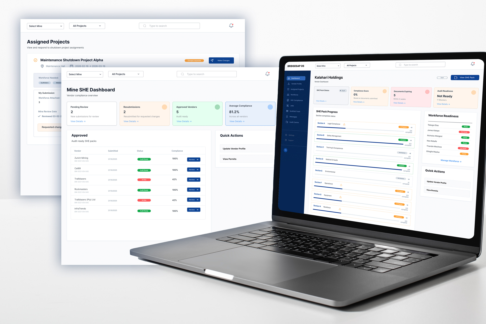
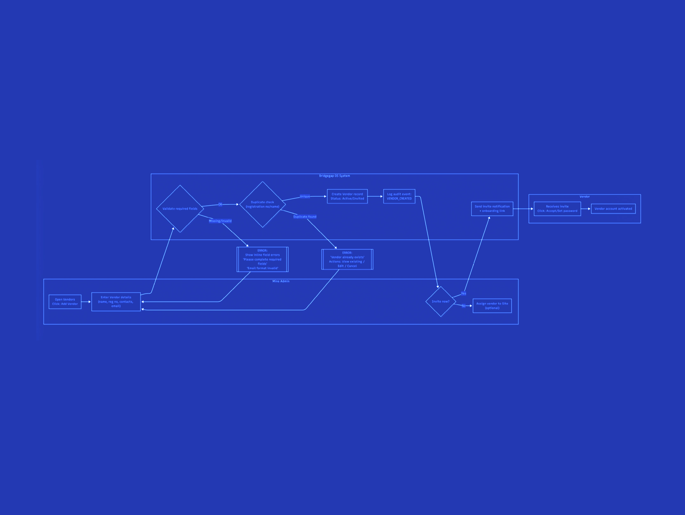
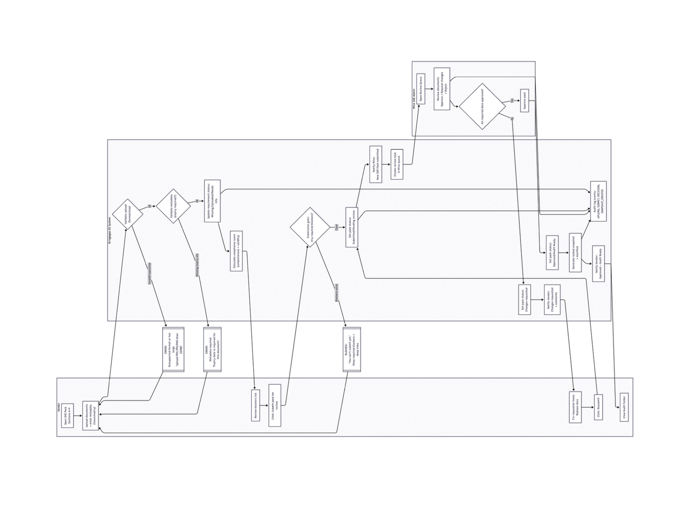

BridgeGap — vendor compliance platform replacing a manual document-review process. Vendor input collected by BridgeGap during stakeholder engagement; structured into design artifacts and built out as a self-serve digital platform.

SHE officers at the mining operation were reviewing every vendor compliance document by hand. Document submissions arrived by email and physical handover. Officers tracked status in spreadsheets and inboxes. The volume created a backlog, and during time-sensitive operations like plant shutdowns, vendors were occasionally cleared with documentation gaps.
The problem wasn't a lack of process — the process existed and was well-defined on paper. The problem was that the process lived in inboxes, with no shared visibility across the operation, and no scalable way to handle peak periods.
BridgeGap had already done the field engagement — collecting raw stories and pain points from vendors during stakeholder interviews. My role on the research side was different from a typical discovery: rather than running primary interviews, I worked from the qualitative material BridgeGap had gathered, validating it against operational reality and translating it into the design artifacts the build would actually run on.
Reviewed and validated raw vendor input collected by BridgeGap. Cross-checked against SHE compliance officers and operational records to confirm that what vendors described matched what the operation observed.
Source: BridgeGap field engagement · validated with SHE officersTranslated validated input into structured user stories — "As a vendor, I want to track which documents are due for renewal, so that I never miss a compliance window." One story per recurring need, scoped to fit the platform's first release.
Two user roles: vendor · SHE officerMapped end-to-end flows for each user story: document upload, expiry tracking, officer review, exception handling, audit trail. Journeys covered the unhappy paths — gaps, rejections, escalations — alongside the happy paths.
Vendor-side flows · officer-side flows · cross-stakeholder journeys

Working through the stories and flows surfaced a small number of consistent patterns. They became the foundation for the design moves that followed.
Compliance status lived inside the operation's inbox — not on a vendor's screen. Vendors learned about expired documents only when they were turned away from a job, or when a SHE officer chased them.
For each engagement, officers reviewed the same set of documents against the same rules. There was no shared record of "this vendor's documents are current" — every reviewer started from scratch.
During plant shutdowns, the volume of vendor approvals spiked and the manual workflow couldn't scale. That's when documentation gaps slipped through — not because of carelessness, but because of throughput limits.
When auditors or regulators asked for evidence of compliance, the trail had to be reconstructed from emails and spreadsheets. The operation had the right behaviour, but not always the right paper.
The user stories and flows pointed clearly at the design move: stop treating compliance as a series of one-off document reviews, and start treating it as a continuous state that vendors and officers share visibility on.
I designed a self-service platform where vendors upload, track, and update compliance documents directly. Each document type has its own validation, expiry tracking, and renewal cadence — surfaced to the vendor before it becomes a blocker. On the officer side, status and exception flows mean SHE officers see where each vendor stands without manual checking, and urgent gaps surface automatically rather than waiting for someone to go looking.
I also delivered a component library to support continued feature work as the platform expanded into adjacent areas: vendor onboarding, asset tracking, and shutdown project management. The design system was deliberately scoped to extend.